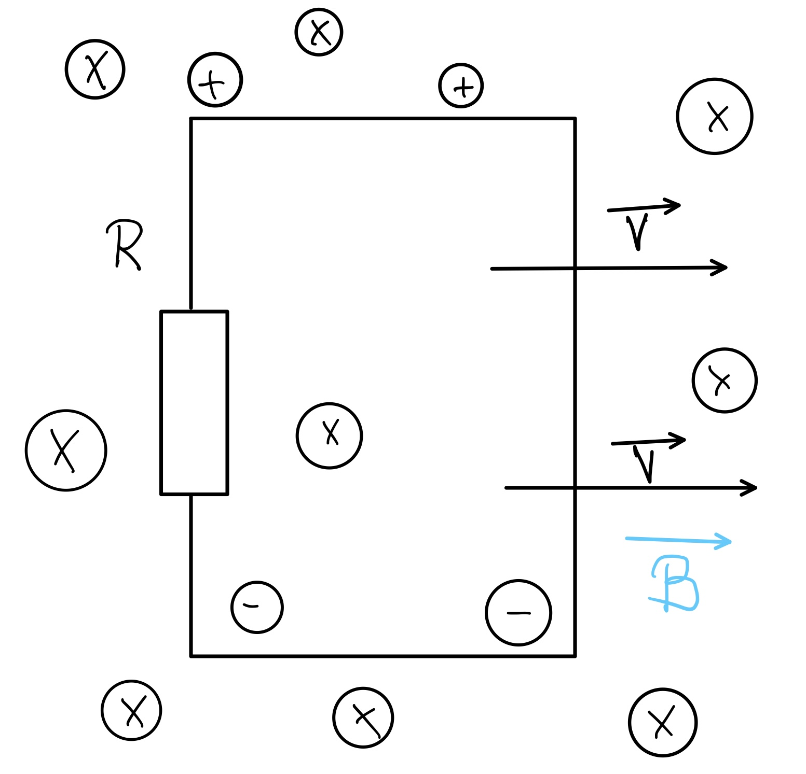

Induktionsgesetz
Herleitung
Bei einem Gleichstromgenerator bewegt man einen Leiter in einem
konstanten Magnetfeld. Die induzierte Spannung berechnet man nach dem
Induktionsgesetz. $$ U=v\cdot B\cdot l\cdot z$$

Bewegt man einen Leiter so in einem Magnetfeld, dass er die Feldlinien
schneidet, so wird in dem Leiter eine Spannung induziert, die man mit
folgender Formel berechnet: $$ U=v\cdot B\cdot l\cdot z$$ ZEICHNUNG
FEHLT
Bei einer Geschwindigkeit v let die Leiterschleife in einer bestimmten
Zeit Δt eine bestimmte Strecke Δx innerhalb des Magnetfeldes
zurück, dabei gilt mit: $$v=\frac{\Delta x}{\Delta t} $$
$$U=\frac{\Delta x}{\Delta t} \cdot B\cdot l$$ Bei einer Geschwindigkeit
v überstreicht die Leiterschleife in einer bestimmten Zeit Δt eine
bestimmte Fläche ΔA innerhalb des Magnetfeldes:
Die Fläche ΔA berechnet sich dabei nach der Formel: $$\Delta
A=I\cdot \Delta x$$
$$U=\frac{\Delta A}{\Delta t} \cdot B$$ Diese Flächenänderung innerhalb
der Leiterschleife, bewirkt zusammen mit der magnetischen Flussdichte B
eine Flussänderung ΔΦ. $$\Delta \Phi =B\cdot \Delta A$$
Man erhält: $$ U=\frac{\Delta \Phi }{\Delta t} $$
Wird die Leiterschleife (eine einzige Windung) durch eine Spule mit N
Windungen ersetzt, so ergibt sich die N-fache Induktionsspannung.
$$U=N\cdot \frac{\Delta \Phi }{\Delta t} $$ Wenn die Leiterschleife in
das Magnetfeld hineinbewegt wird, die Flussänderung positiv ist, so wird
eine negative Spannung induziert. Wen die Leiterschleife aus dem
Magnetfeld herausbewegt wird, die Flussänderung negativ ist, so wird
eine positive Spannung induziert. Dieses Verhalten berücksichtigt man in
der Formel indem man in Minuszeichen hinzufügt. $$U=-N\cdot \frac{\Delta
\Phi }{\Delta t} $$ Merke: Man kann eine Spannung erzeugen, indem man
einen Leiter in einem konstanten Magnetfeld bewegt, oder
bei einem in einem Magnetfeld ruhenden Leiter das Magnetfeld verändern.
$$ U=v\cdot B\cdot l\cdot z$$ $$U=-N\cdot \frac{\Delta \Phi }{\Delta t}
$$